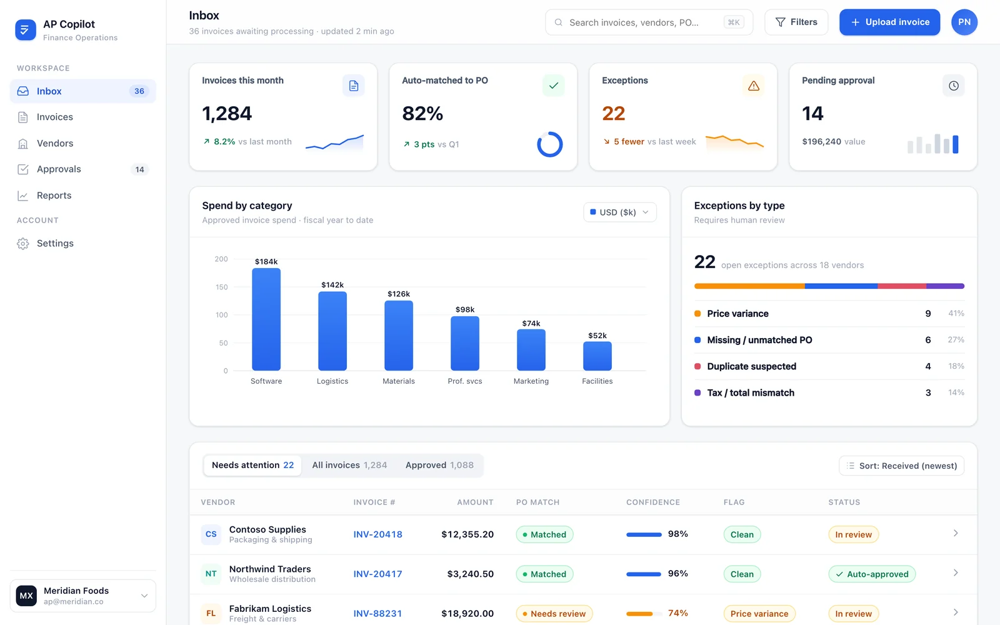
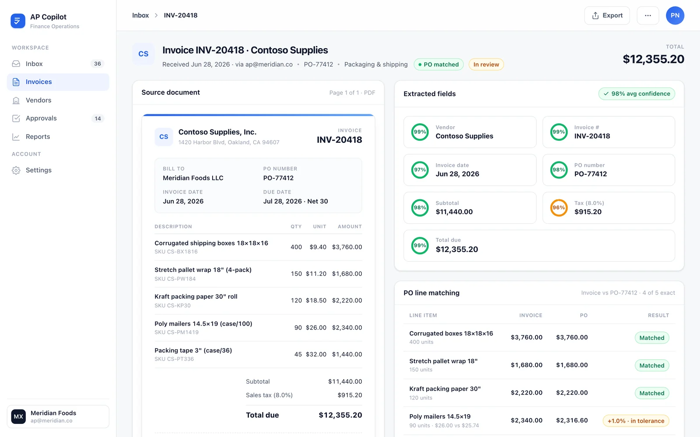

Email-to-inbox ingestion
Invoices arrive by email and AP Copilot captures the source PDF automatically — no manual upload, no re-keying.
Accounts payable, on autopilot
AP Copilot reads every invoice the moment it lands, matches each line to the purchase order, and routes clean approvals under your policy. Only genuine exceptions reach a human — each with the model's reasoning and a full audit trail.
01 — The problem
Invoices arrive as email attachments in a dozen formats. Someone keys the fields by hand, hunts down the matching PO, checks it isn't a duplicate, then chases an approver. Every step is manual, slow, and quietly error-prone — and none of it leaves an audit trail a controller can defend.
02 — How it works
Invoices land by email and AP Copilot captures the source PDF, then extracts every field — vendor, PO, amounts, tax, totals and line items — with a per-field confidence score.
Each line is matched against the originating purchase order within a configurable price tolerance, while duplicate, price-variance and budget checks run against a full quarter of history.
Clean invoices are routed to the right approver under policy and cleared without a touch. Only genuine exceptions surface for a human — each carrying the model's reasoning and an auditable trail.
03 — Product tour
KPI tiles across the top, spend by category and exceptions-by-type at a glance, and a live queue where every invoice shows its PO-match state and extraction confidence. The controller sees the whole month in one view.

Open any invoice and the source PDF sits beside the AI-extracted fields, each with a confidence ring. Line-level PO matching, duplicate, price and budget anomaly checks, and the full approval trail are all on one screen — defensible by design.

04 — What's inside
Invoices arrive by email and AP Copilot captures the source PDF automatically — no manual upload, no re-keying.
Every field is read with a confidence ring, so you know exactly which values to trust and which to glance at.
Each line is matched to the originating purchase order within a configurable price tolerance you control.
Duplicate, price-variance and budget checks run against a full quarter of history before anything is paid.
Clean invoices route to the right approver under your policy, with a full audit trail on every decision.
Spend by category and an exceptions-by-type breakdown give finance a live read on where money and effort go.
05 — Control & audit
AP Copilot doesn't just move faster — it holds up under review. Every extraction carries a confidence score, every check is recorded, and every approval leaves a trail a controller can stand behind.
06 — Built with
Ready when you are
See AP Copilot read, match and route your own invoices in a live walkthrough. We'll tailor the tolerances and routing to how your finance team already works.
Or email buildspacelabs@vruoom.com · buildspacelabs.com/contact-us